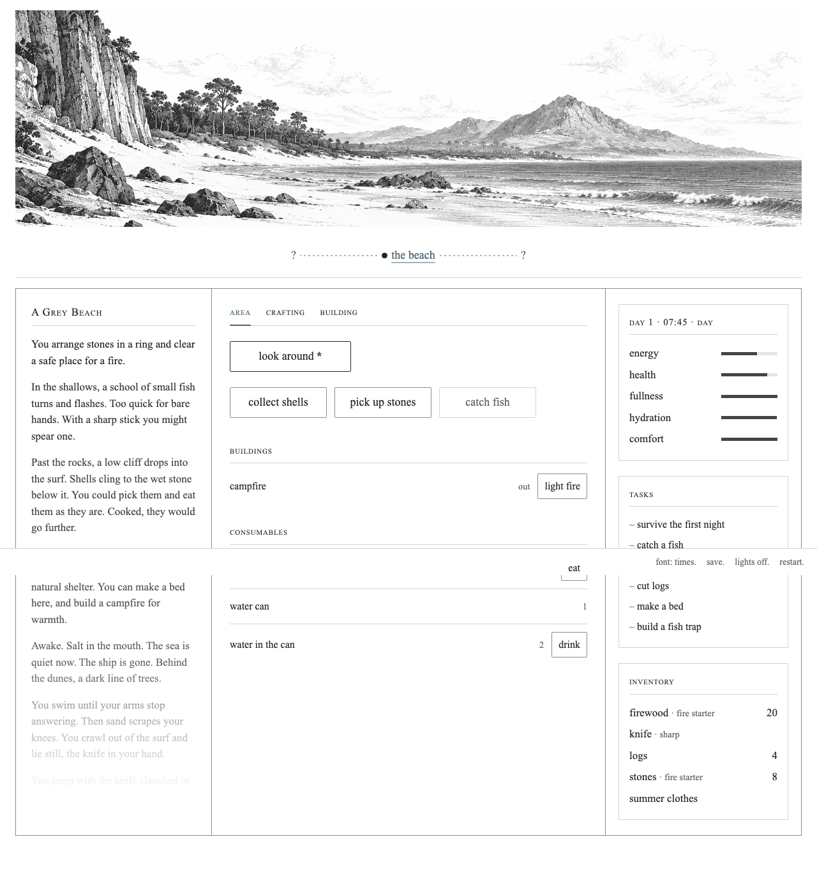

Revised, unapproved beach artwork The previous outline-heavy candidate was rejected after visual review. This new 2116×743 source restores the reference's engraved depth and remains unapproved. Images below load the actual revised file. The 40:11 framing is CSS-only; no 1600×440 production export exists.
Full revised source — 2116×743 Proposed 40:11 framing
Revised in-game review captures These screenshots show the current running UI with the revised image temporarily inserted in the panorama slot. The image is still unapproved and is not included in normal game loading.

Desktop: Area · Crafting · Building Area · Crafting · Building
The older comparison and its linked screenshots show the rejected first preview, for review history only.